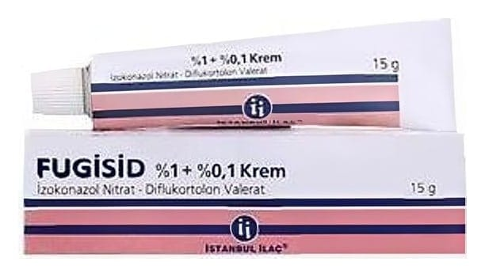

Fugisid %1 + %0,1 Krem, 15 g

Ne için kullanılır
KT · Bölüm 1FUGİSİD, ağır iltihabi veya ekzemalarla birlikte seyreden (örneğin ellerde, parmak araları, kasık ve genital bölgelerde) derinin yüzeysel mantar enfeksiyonlarının başlangıç veya ara tedavisi için kullanılır. FUGİSİD’in ambalaj büyüklüğü 15g'dır ve 1g FUGİSİD, 10 mg (%1) izokonazol nitrat ve 1 mg (%0,1) diflukortolon valerat etkin maddelerini içerir. Bu ilaç iki aktif madde içerir, izokonazol nitrat ve diflukortolon valerat. İzokonazol nitrat derinin fungal hastalıkları tedavi eder ve diflukortolon valerat derinin enflamasyonunu baskılar ve kaşıntı, yanma ve ağrı gibi şikayetleri yatıştırır.